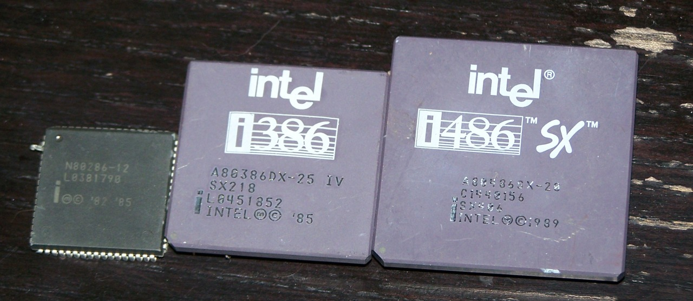
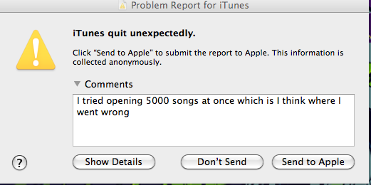
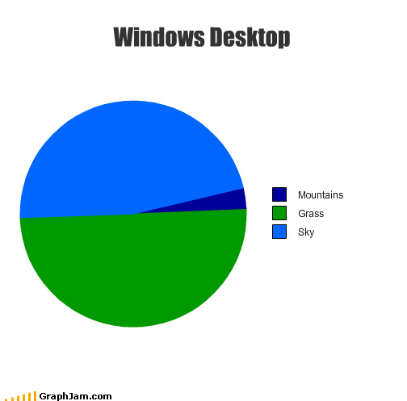

Shown are Four (2000) on Two (1997) and One (1993) on Three (1999).
They don’t make ‘em look like they used to.
Shown are Four (2000) on Two (1997) and One (1993) on Three (1999).
They don’t make ‘em look like they used to.

Intel inside… or they were at one time. More from the processor bin.
These days we tend to forget just how significant the 286, 386, 486 and Pentium (586) were back in the ‘80s and '90s.

HEIGHT SLIDER IN THE SIMS 4!! Hell Yeah!
This has potential of TITANIC proportions
The line starts waaaaaaaaaaayyyyyyyy down there.

Mac.

woah bitch the fuck was that for
Where was this when I needed it?
In the days of 8" floppy disks, it was quite a chore.

It has to be statistified for it to make sense.